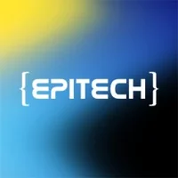
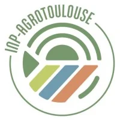

Alternant DevOps Engineer Build · Deploy · Monitor
Infrastructure as Code, Kubernetes, GitOps et AWS. You build it, you run it.
Outils du quotidien.
Stack orientee production, GitOps et observabilite.
Linux / Bash
AvanceDocker / Compose
AvancePython
AvanceKubernetes
IntermediaireTerraform
IntermediaireAnsible
IntermediaireGitLab CI/CD
IntermediaireArgoCD
IntermediairePrometheus / Grafana
IntermediaireFastAPI
IntermediaireHelm / Kustomize
IntermediaireAWS : EC2 · S3 · VPC
IntermediaireCertifie AWS x2
Cloud Practitioner
CLF-C02 · Foundational
.webp)
Solutions Architect Associate
SAA-C03 · Associate
Du code qui tourne.
Examens pratiques, side-projects et infrastructure from scratch.
Infrastructure K8s On-Premise
Cluster Kubernetes from scratch sur Proxmox. GitOps ArgoCD, 3 envs isolees, Traefik + TLS, Prometheus/Grafana, backup Velero.
Jenkins CI/CD Pipeline
Pipeline multi-envs K8s via Helm.
Terraform AWS IaC
Infra AWS multi-AZ modulaire.
Ansible multi-roles
WordPress + MySQL, Jinja2.
Kubernetes Deployment
StatefulSet PostgreSQL + ETCD.
Docker pipeline tests
Tests auto multi-conteneurs.
Datadog Observabilite
APM + integration Prometheus.
GitLab CI microservices
3 images, push DockerHub.
PostgreSQL MLD Anime
Modelisation MERISE + SQL.
FastAPI Full Stack
API REST + Auth + PostgreSQL.
CRM Generator
Donnees fictives · Faker + logging.
Trieur CLI
Tri auto · pathlib + config JSON.
Tableau de Bord Devises
Dashboard Django · API taux de change · Chart.js temps reel.
Mon Premier Blog
Blog Django · CRUD articles · templates · routing dynamique.
Web Scraper Amazon
Scraper prix + alertes Pushover + Sentry.
FlaskGPT
Clone ChatGPT · Flask + OpenAI + SSE.
Scraper Airbnb Playwright
Anti-bot + rotation proxies.
Bot Discord
Bot async · commandes + dotenv.
Experience & formation.

Epitech MSc Pro, 4e annee
Bordeaux · Specialisation cloud, cybersecurite.
Formation DevOps DataScientest, RNCP6
450h · Docker, K8s, Terraform, Ansible, CI/CD, Monitoring.
Formation Udemy, Python
75h · Web scraping, Flask, Discord bots, CLI tools, APIs.
Tech Recruiter · Practice Leader DevOps · Data Recrutement
Bot Python/FastAPI maison. Perimetre : CTO, Head of DevOps, SRE, Cloud, Data.

INP / ENSAT Toulouse
Ingenieur agronome.
Autonomie operationnelle
De bout en bout, sans supervision constante.
Vision architecte
Scalabilite, resilience et securite d'abord.
Responsabilite E2E
Je porte mes deploiements jusqu'en prod.
Technophile
Passione par l'IA, l'automatisation et les technos emergentes.
Notes de terrain.
MaJ · 10.04.2026Deployer un cluster K8s on-premise avec kubeadm et Ansible
02.04.2026 · 12 minBootstrap kubeadm, roles Ansible reutilisables, gotchas reseau et premier pod en prod.
LireGitOps avec ArgoCD : sync automatique dev/staging/prod
20.03.2026 · 8 minStructurer un repo GitOps, gerer 3 envs et eviter le "works on my cluster".
LireMonitoring K8s : Prometheus + Grafana de zero
05.03.2026 · 10 minkube-prometheus-stack, dashboards et alertes qui ne reveillent pas a 3h.
Lire